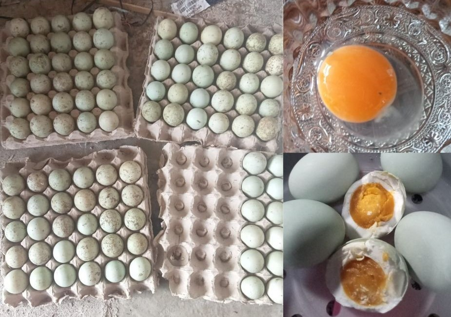
{kind=link}
Telur Asin dan Telur Omega
Usaha milik Bu Lina Walji menyediakan telur asin dan telur omega hasil peternakan bebek yang diolah dengan baik sehingga menghasilkan produk berkualitas dan siap dikonsumsi
Media informasi mengenai profil dusun, kegiatan kepemudaan, dan UMKM lokal sebagai upaya memperkenalkan potensi serta mendukung penyebaran informasi kepada masyarakat
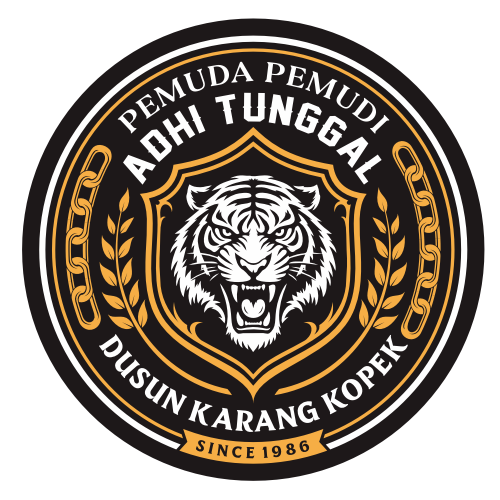
Informasi umum mengenai Dusun Karang Kopek Kulon
Dusun Karang Kopek Kulon merupakan salah satu dusun yang berada di Desa Ngluwar, Kecamatan Ngluwar, Kabupaten Magelang, Provinsi Jawa Tengah. Dusun ini memiliki luas wilayah sekitar 13,69 hektar dengan jumlah penduduk sebanyak 143 kepala keluarga
Dalam struktur administrasi wilayah, Dusun Karang Kopek Kulon berada dalam RW 06 dan terdiri atas tiga RT, yaitu RT 01, RT 02, dan RT 03. Setiap RT dipimpin oleh seorang ketua RT yang bertanggung jawab dalam penyelenggaraan administrasi lingkungan, koordinasi kegiatan masyarakat, serta pelayanan kepada warga sesuai dengan wilayah kerjanya

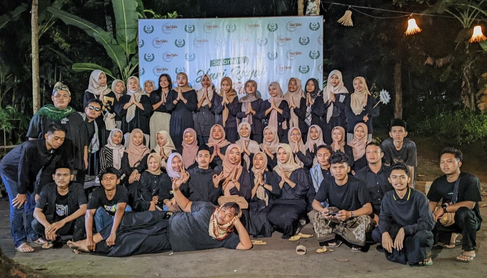
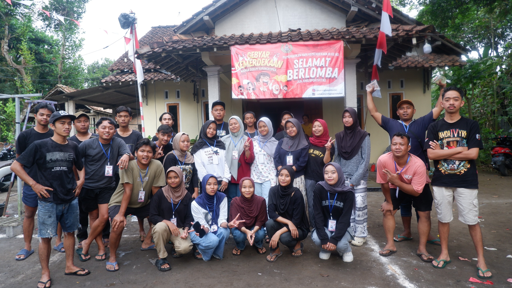
Awal Mula Kawasan
Dusun Karang Kopek Kulon pada awalnya merupakan kawasan hutan yang dipenuhi pepohonan besar, tanaman berduri, dan semak belukar.
Kedatangan Ki Ajar Windusana
Ki Ajar Windusana bersama para pengikutnya singgah di kawasan tersebut dalam perjalanan pengembaraannya. Suasana yang nyaman dan tenteram membuat mereka memutuskan untuk menetap serta membuka lahan bagi permukiman dan pertanian. Mereka juga membangun jalan dan saluran air guna mendukung kehidupan masyarakat.
Asal-usul Nama Karang Kopek
Masyarakat setempat mempercayai keberadaan Nyai Kopek, seekor macan putih yang menjaga kawasan tersebut. Nama Karang Kopek diambil dari sosok Nyai Kopek sebagai bentuk penghormatan kepadanya.
Perkembangan Dusun
Perkembangan wilayah semakin pesat setelah kedatangan Simbah Kyai Jantoko dan Simbah Wali Kutub yang menyebarkan ajaran Islam. Ki Ajar Windusana berpesan agar kawasan tersebut dijadikan sebuah dusun dan diberi nama Dusun Karang Kopek sebagai penghormatan kepada Nyai Kopek sebelum melanjutkan pengembaraannya.
Dusun Karang Kopek Kulon dipimpin oleh Kepala Wilayah yang membawahi RW 06 beserta tiga RT di bawahnya. Struktur kepemimpinan ini bertugas dalam mengoordinasikan penyelenggaraan administrasi serta pelayanan kepada masyarakat di lingkungan dusun
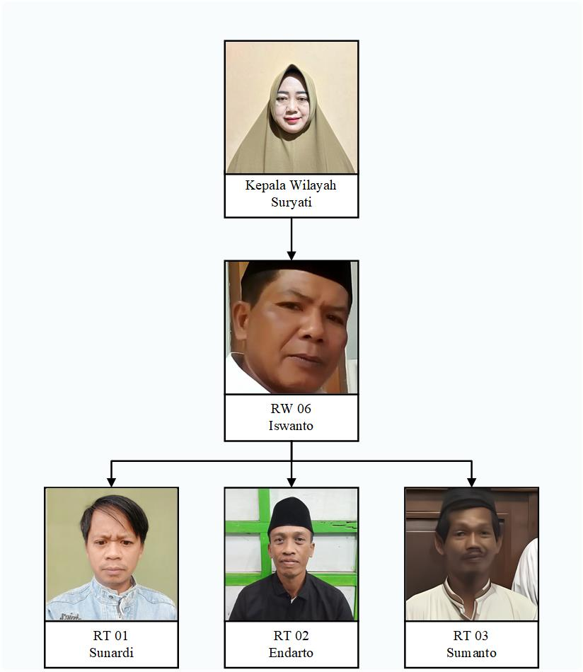
Dusun Karang Kopek Kulon berada dalam wilayah RW 06 yang diketuai oleh Bapak Iswanto. Secara administratif, dusun ini terdiri atas tiga RT dengan rincian sebagai berikut:
Denah Wilayah Dusun Karang Kopek Kulon

Mengenal organisasi kepemudaan yang aktif berkontribusi dalam kehidupan bermasyarakat
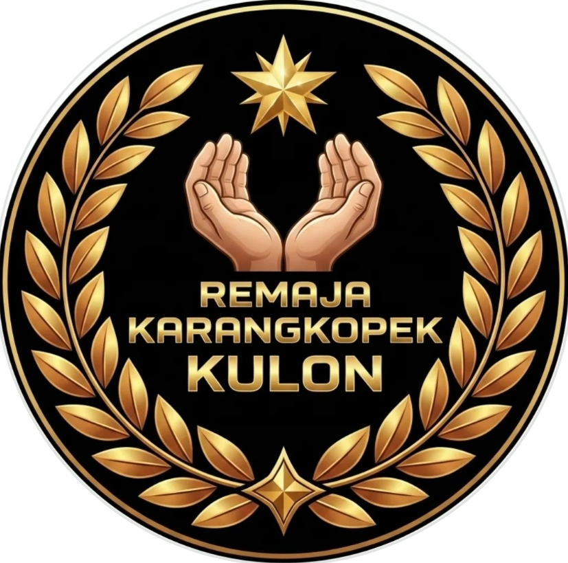
Remaja Karang Kopek Kulon merupakan organisasi kepemudaan yang berdiri sejak tahun 2018 sebagai wadah bagi generasi muda untuk mengembangkan potensi, memperkuat kebersamaan, serta berkontribusi dalam kehidupan bermasyarakat. Berbagai kegiatan yang diselenggarakan di bidang sosial, keagamaan, dan kepemudaan menjadi sarana dalam menumbuhkan kepedulian sosial, semangat gotong royong, dan kerja sama di lingkungan Dusun Karang Kopek Kulon
Makna slogan karang taruna sebagai berikut:
Membangun pola pikir kreatif dan inovatif bagi generasi muda, serta memiliki daya ledak yang tinggi untuk masyarakat
Pengurus Karang Taruna
Memimpin organisasi serta mengoordinasikan program kerja bagi kemajuan pemuda dan masyarakat
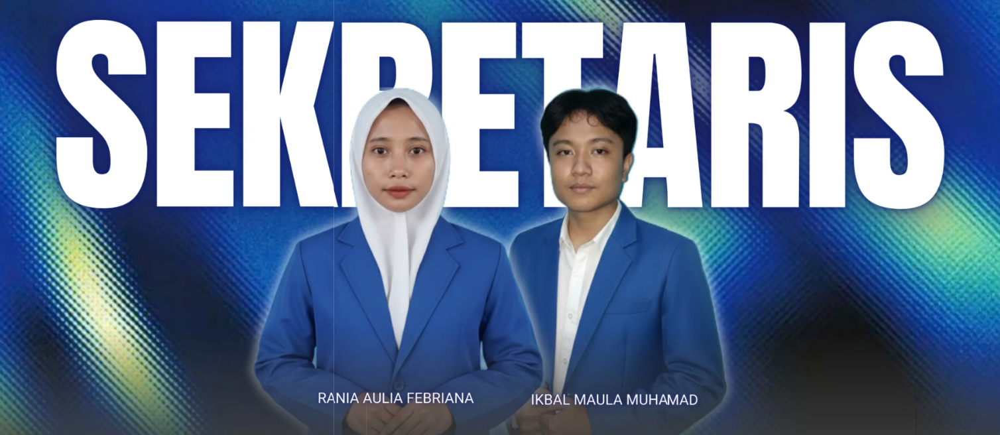
Mengelola administrasi organisasi serta memastikan kelancaran koordinasi dan informasi
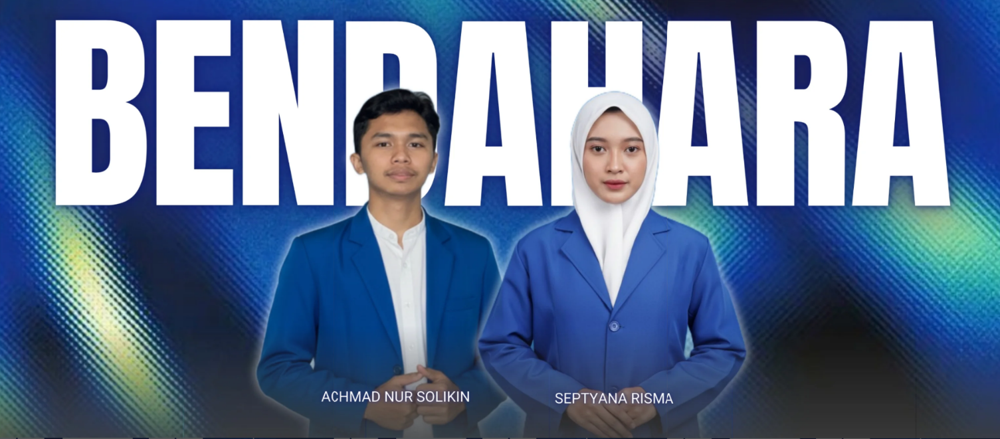
Mengelola keuangan dan menyusun laporan untuk mendukung program kerja
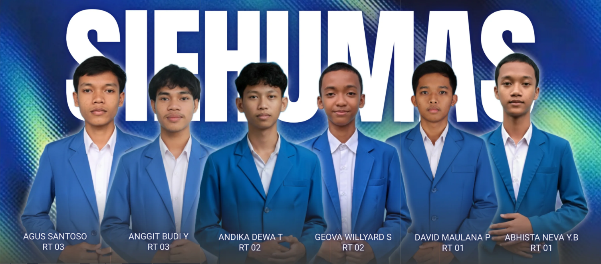
Mengelola komunikasi dan publikasi organisasi kepada masyarakat
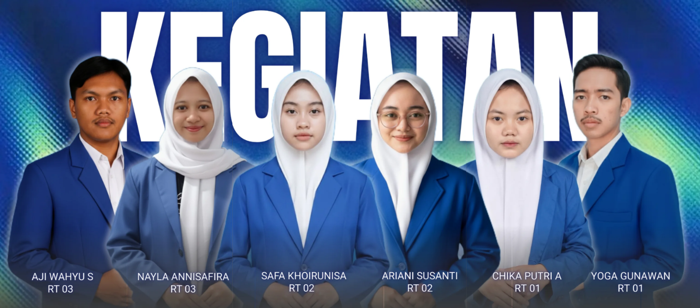
Merencanakan dan melaksanakan kegiatan organisasi
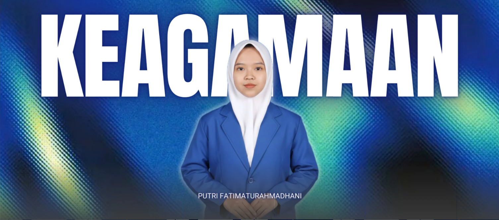
Mendukung dan mengembangkan kegiatan keagamaan organisasi
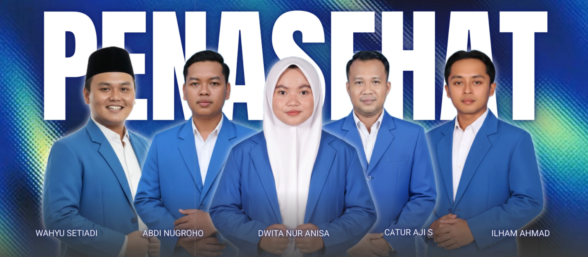
Memberikan arahan dan masukan untuk mendukung perkembangan organisasi
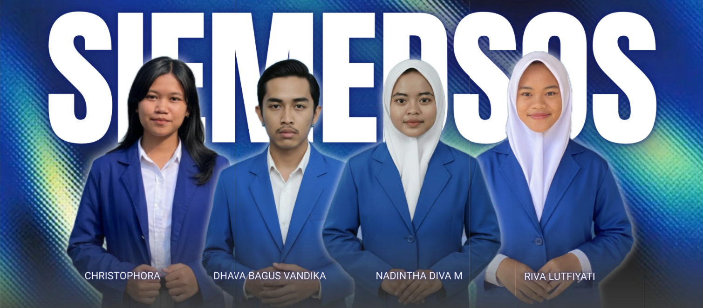
Mengelola media sosial dan publikasi organisasi
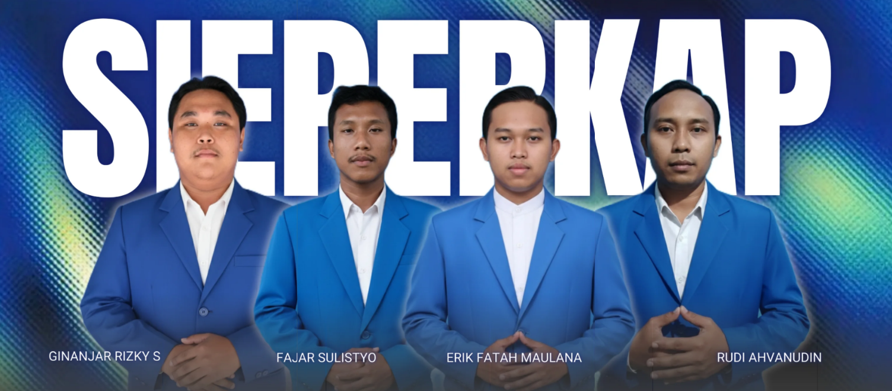
Mengelola perlengkapan dan kebutuhan setiap kegiatan organisasi
Kegiatan Karang Taruna Karang Kopek Kulon
Karang Taruna Dusun Karang Kopek Kulon merupakan organisasi kepemudaan yang menjadi wadah bagi generasi muda untuk berperan aktif dalam kegiatan sosial, kemasyarakatan, dan pengembangan potensi di lingkungan dusun. Organisasi ini dibentuk atas dasar kesadaran dan tanggung jawab bersama untuk menciptakan generasi muda yang aktif, kreatif, serta mampu berkontribusi dalam mendukung kesejahteraan dan kemajuan masyarakat
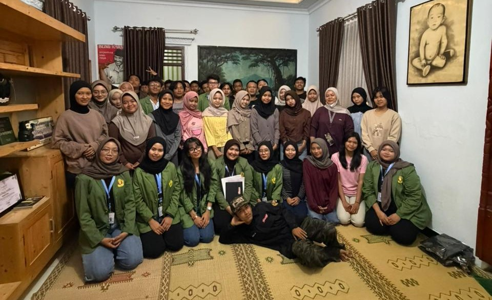
Pengumpulan barang bekas merupakan kegiatan rutin Karang Taruna Dusun Karang Kopek Kulon yang dilaksanakan setiap akhir bulan. Kegiatan ini bertujuan mengumpulkan barang bekas yang masih memiliki nilai guna dan nilai jual sebagai bentuk kepedulian terhadap lingkungan serta mendukung kegiatan organisasi. Hasil pengumpulan dimanfaatkan untuk menunjang berbagai program dan kegiatan Karang Taruna
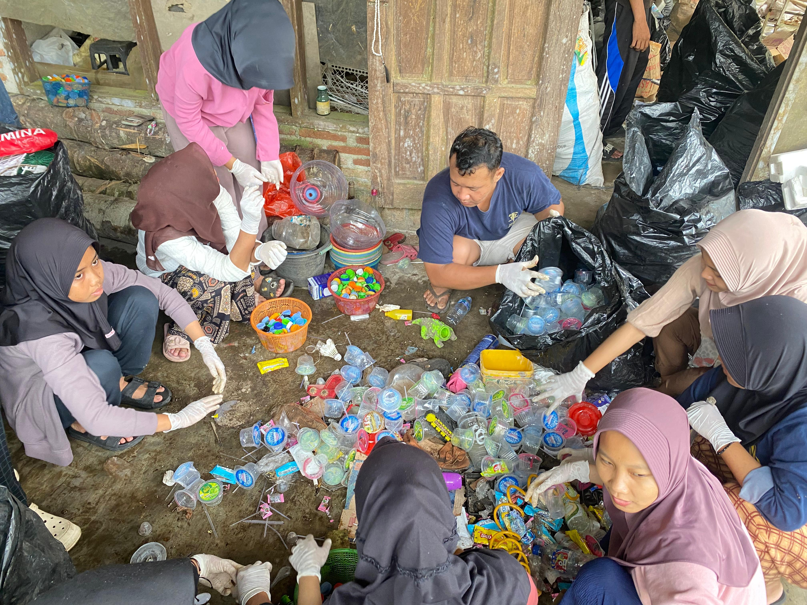
Pembagian Takjil Ramadhan merupakan kegiatan rutin Karang Taruna Dusun Karang Kopek Kulon yang dilaksanakan setiap bulan Ramadan sebagai bentuk kepedulian dan kebersamaan dengan masyarakat. Kegiatan ini dilakukan dengan membagikan takjil gratis kepada warga sekitar menjelang waktu berbuka puasa. Pelaksanaan kegiatan ini menjadi sarana untuk mempererat tali silaturahmi serta menumbuhkan semangat berbagi di bulan suci Ramadhan
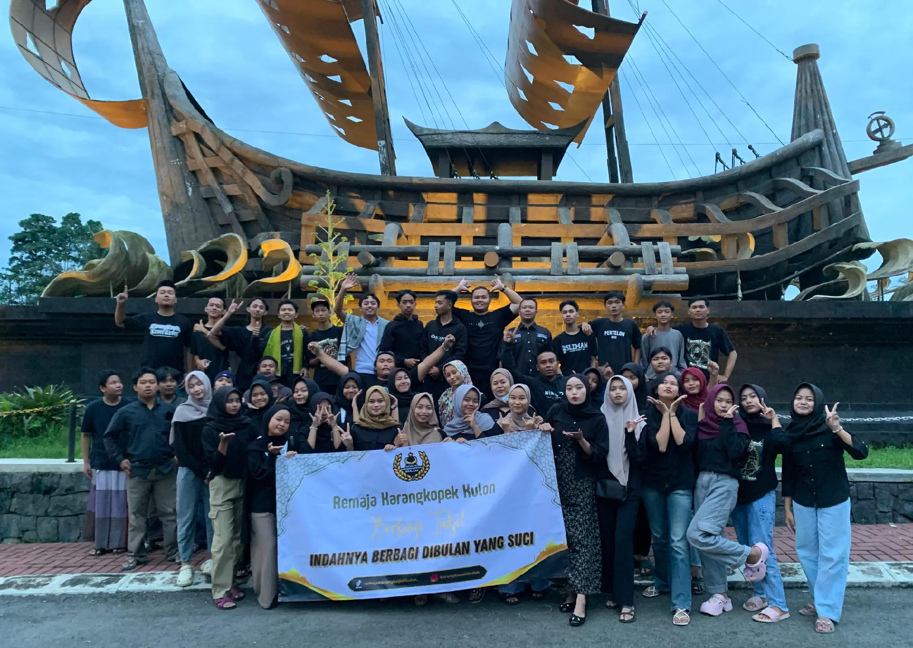
Takbir keliling merupakan kegiatan Karang Taruna Dusun Karang Kopek Kulon yang dilaksanakan setiap malam Idul Fitri dengan mengelilingi wilayah Dusun Karang Kopek Kulon. Kegiatan ini bertujuan menyemarakkan malam Idul Fitri sekaligus mempererat kebersamaan dan silaturahmi antarwarga. Tradisi ini menjadi salah satu kegiatan rutin yang mencerminkan semangat persatuan dan kekeluargaan masyarakat Dusun Karang Kopek Kulon
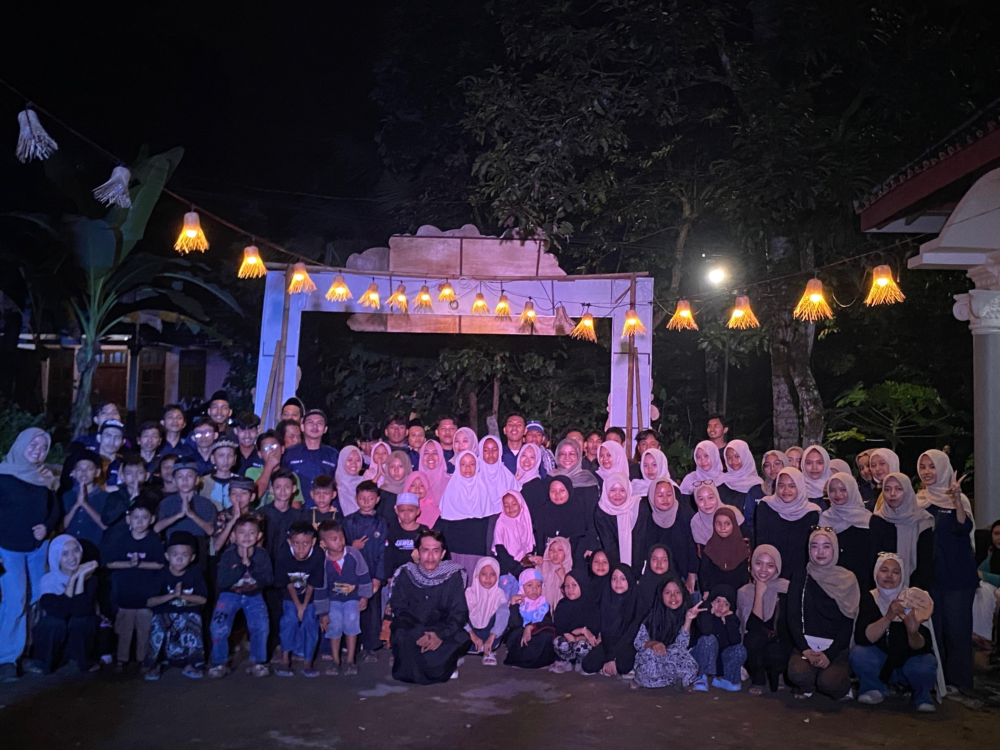
Mengenal berbagai usaha produk UMKM Karang Kopek Kulon

Usaha milik Bu Lina Walji menyediakan telur asin dan telur omega hasil peternakan bebek yang diolah dengan baik sehingga menghasilkan produk berkualitas dan siap dikonsumsi
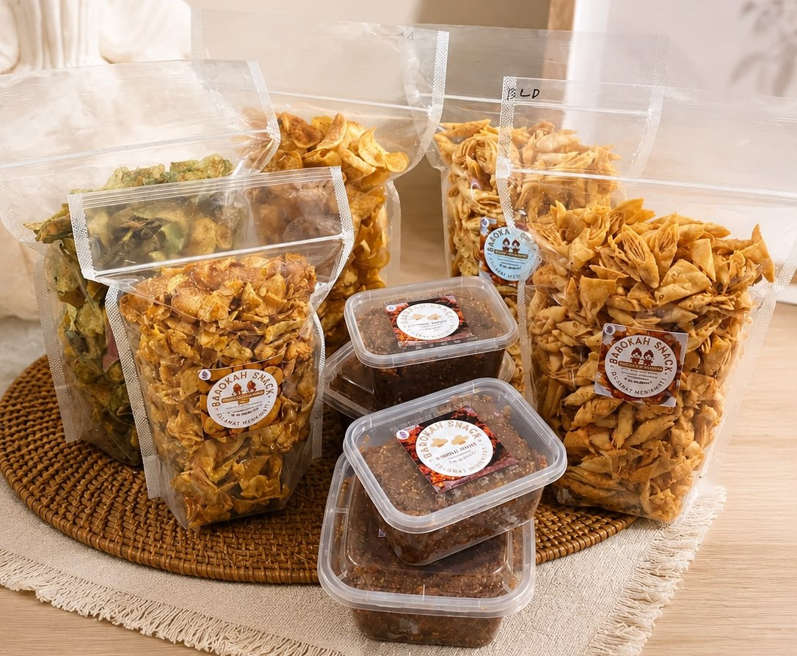
Usaha camilan milik Bu Kamina yang bernama "Barokah Snack" menyediakan berbagai produk, seperti sambal pecel, pangsit aneka rasa, kering kentang pedas manis, dan keripik kentang dengan pilihan rasa ori, balado, barbeque, keju, dan rumput laut
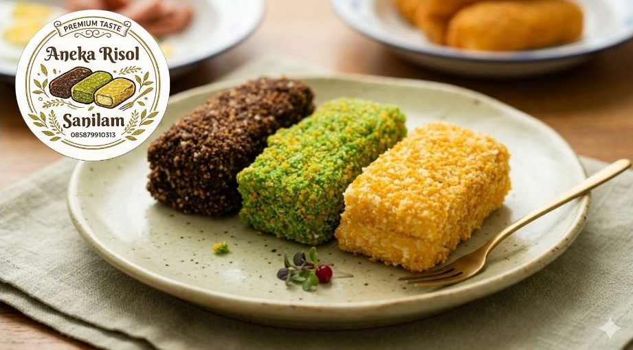
Risoles "Sanilam" milik Mbak Nisa merupakan produk risoles yang menawarkan varian rasa mayo, cokelat, dan matcha. Varian mayo dijual seharga Rp2.000, sedangkan varian cokelat dan matcha seharga Rp3.000

Dapur Bu Kanti menawarkan aneka kue kering dan kue basah, meliputi nastar, kastengel, putri salju, kue kacang, lidah kucing, lemper, kue lapis, kue kukus, sosis solo, risol, serta berbagai pilihan kue lainnya
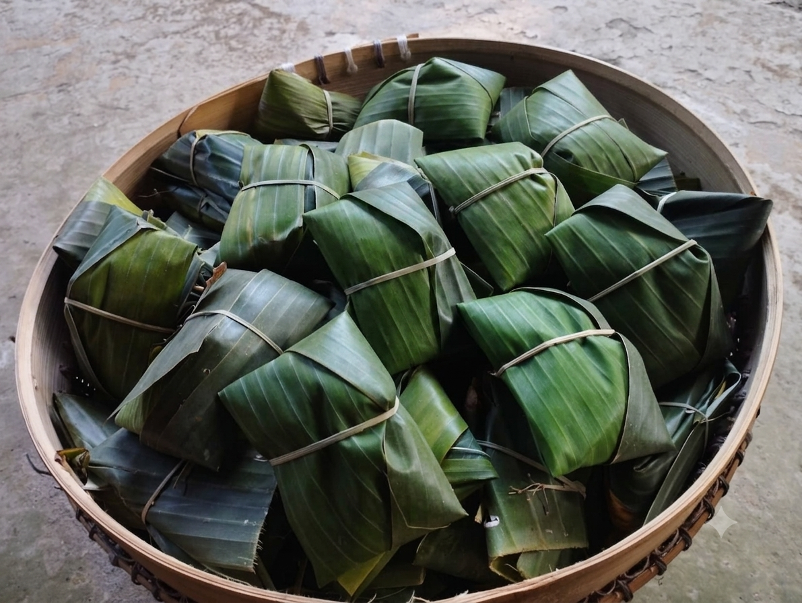
Tempe kedelai milik Bu Rofiatun yang diproduksi secara rutin dan dipasarkan melalui pemesanan langsung. Produk dapat dibeli sesuai jumlah yang diinginkan oleh pelanggan tetap maupun pembeli yang datang ke lokasi produksi
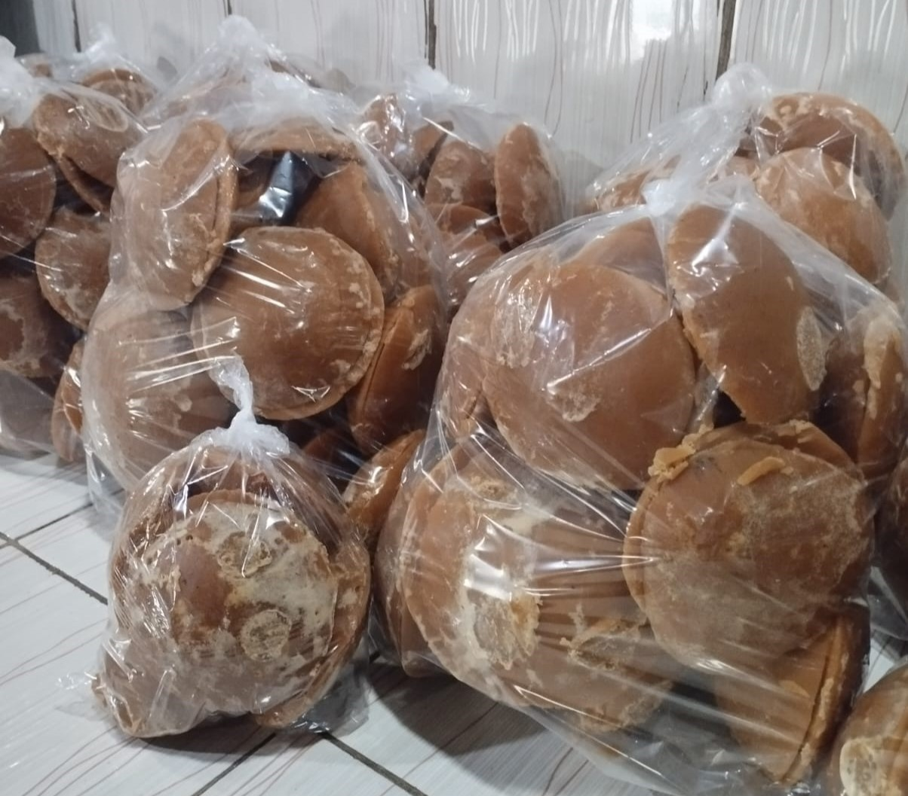
Usaha milik Pak Yuri dan Ibu Samsinah memproduksi gula jawa dalam kemasan 1 kilogram dan 5 kilogram. Produk dibuat berdasarkan pesanan dan dipasarkan melalui toko retail, toko kelontong, serta pabrik
{kind=link}
{kind=link}
{kind=link}
{kind=link}